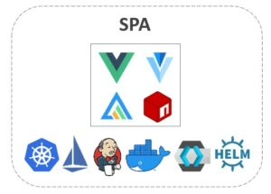
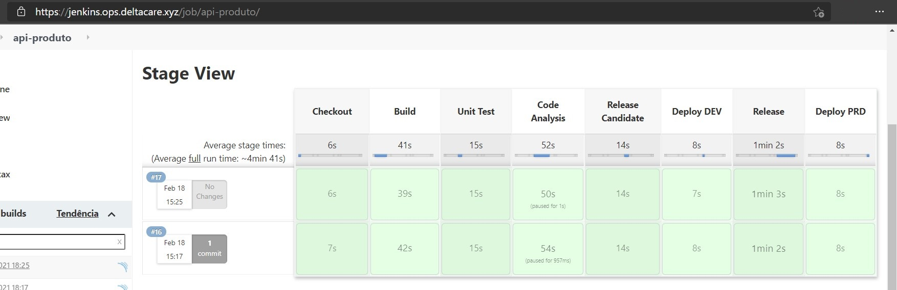

32 tecnologias para uma PoC de Microsserviços na AWS
Em 2020, decidi consolidar em um único software tecnologias que eu vinha estudando em separado e conceitos que, por vezes, se apresentavam somente em teoria.
Essas tecnologias encontram-se na imagem abaixo. Clique na imagem para expandi-la.

Imagem inspirada no landspace da CNCF.
À seguir, o texto explicando o projeto, a arquitetura e o software.
Projeto#
A estrutura abaixo da descrição do projeto foi inspirada no conteúdo da página 115 do PMBOK – 4ª Edição.
Escopo#
O escopo do projeto consiste em criar um software para materializar alguns conceitos de microsserviços. Por isso, adotei o termo PoC (proof of concept).
Com o objetivo de criar um software mais próximo possível da realidade e atendendo às restrições do projeto, criei uma empresa fictícia chamada Deltacare que atua no mercado de seguro saúde. Utilizei o domínio de seguros porque eu trabalhei nele e conheço alguns de seus processos e regras de negócio.
Exclusão#
Embora fundamental para um projeto com microserviço, devido as restrições do projeto, encontra-se fora de escopo:
- Backend For Frontend: Para minimizar e segmentar chamadas do frontend para o backend (mais info: BFF);
- Log centralizado: Para investigar transações entre microsserviços, mesmo das instâncias que foram finalizadas (mais info: Amazon CloudWatch | Cloud Logging | Elastic Stack);
- APM: Para minimizar problemas na experiência de usuário (mais info: New Relic | Dynatrace | Elastic APM);
- Teste de carga: Para minimizar problemas na experiência de usuário (mais info: JMeter | Gatling | k6);
- Teste de integração: Para garantir que os componentes de uma API funcionem integrados (mais info: REST Assured);
- Teste funcional/tela/E2E: Para garantir que o comportamento do software atenda aos critérios de aceitação (mais info: Selenium | Cypress | Playwright);
- BDD: Para minimizar problema de comunicação entre os especialistas de negócio e times do projeto para entender os requisitos funcionais e não-funcionais (mais info: Introdução | Cucumber | BDD in Action);
- BPM: Para minimizar problema de comunicação entre os especialistas e analistas de negócio para entender o comportamento da empresa (mais infos: CBOK);
- DDD: Para minimizar a falta de sinergia entre negócio e tecnologia (mais infos: PPP-DDD | I-DDD);
- Arquitetura Empresarial: Para minimizar a falta de sinergia entre negócio e tecnologia (mais infos: TOGAF | ArchiMate | Archi);
- Chaos Engineering: Para minimizar problema inesperado em produção quando um componente possui um comportamento diferente do comum (mais infos: Princípios | Traffic Management);
- Estratégias de Deployment: Para minimizar o risco de novas entregas em produção (mais infos: Conceitos | Canary Release | Feature Toogles | Exemplos);
- Branching workflows: Para melhorar e padronizar o trabalho de programadores no mesmo repositório (mais info: Conceitos | git-flow);
- Richardson Maturity Model: Para padronizar e melhor a qualidade de REST APIs (mais infos: Conceitos).
Considerando esses itens:
- As pipelines não possuem teste de carga, teste de integração e teste funcional/tela/E2E;
- Os diagramas/viewpoints aqui apresentados não possuem uma linguagem definida (ArchiMate ou C4 Model, por exemplo).
Entrega#
Os códigos encontram-se no Github. https://github.com/delta-care
As imagens encontram-se no Dockerhub. https://hub.docker.com/u/deltacare
Os projetos de análise encontram-se no SonarCloud. https://sonarcloud.io/organizations/delta-care/projects
Restrição#
O projeto não possuiu financiamento além do meu. Desse modo, restringiu-se à execução do menor tempo e custo possível.
Sobre tempo, foi pouco mais de 8 semanas. Sobre custo, foi $64 dólares. A distribuição do custo por dia e serviço utilizado encontra-se abaixo.
Utilizei os serviços da AWS. O serviço EC2 esteve ligado somente quando utilizado (somente uma máquina). Fiz o mesmo com o RDS, com exceção de alguns dias.

Premissa#
Não encontrada.
Arquitetura#
O software para o domínio do problema em questão poderia ser perfeitamente criado por um monolito bem estruturado e, se necessário, quebrado em microsserviços posteriormente.
No entanto, o objetivo é a criação de um software com arquitetura de microsserviços independente se o domínio do problema exige ou não tal arquitetura.
Então, a arquitetura resultante está representada na imagem abaixo.

Imagem inspirada no eShop da Microsoft.
Componentes#
As duas partes envolvidas de traços azul representam a esquerda o usuário, no qual encontra-se logado e já baixou os arquivos da SPA, e a direita o ambiente da AWS, com todos os componentes rodando e gerenciados pelo Kubernetes e Istio (detalhes na seção OPS abaixo).
Os seis componentes envolvidos de traços cinzas são os quais armazenados no Github da Deltacare.
Os quatros componentes de API possuem losango porque sua arquitetura representa a arquitetura de portas e adaptadores ou hexagonal.
Padrões#
Como o texto do Chris Richardson não possui uma boa imagem, utilizei abaixo a imagem de outro texto. Os padrões marcados em vermelho são os quais utilizei.

OPS#
O primeiro passo do projeto foi criar o código da infraestrutura, conforme explicado abaixo. O resultado encontra-se aqui.
Pacotes#
O script 01-install-pkg.sh instala o Terraform e Ansible. Utilizei Ubuntu 18.04 LTS em minha máquina.
Terraform#
Com o Terraform instalado, rodei o script 02-create-ec2.sh que, utilizando o script ./terraform/main.tf, cria uma máquina na AWS atendendo as exigências do Kubernetes.
Ansible#
Com o Ansible instalado, rodei o script 03-conf-env.sh que, utilizando o inventário ./ansible/inventory/aws_ec2.yaml, executa os passos abaixo na máquina criada pelo Terraform.
- Instalar Docker;
- Instalar Kubernetes;
- Instalar Istio;
- Instalar Grafana
- Instalar Jaeger
- Instalar Prometheus
- Instalar Kiali
- Criar gateway Istio
- Host
- kiali.ops.deltacare.xyz
- grafana.ops.deltacare.xyz
- prometheus.ops.deltacare.xyz
- jaeger.ops.deltacare.xyz
- Porta
- 80
- 443
- Host
- Criar virtual service Istio
- URIs das ferramentas
- Configurar ambiente de operação (ops);
- Criar namespace “ops”
- Instalar Keycloak
- Instalar Jenkins e suas roles
- Criar gateway Istio
- Host
- sso.deltacare.xyz
- jenkins.ops.deltacare.xyz
- Porta
- 80
- 443
- Host
- Criar virtual service Istio
- URIs das ferramentas
- Configurar ambiente de desenvolvimento (dev);
- Criar namespace “dev”
- Criar gateway Istio
- Host
- dev.deltacare.xyz
- Porta
- 80
- 443
- Host
- Criar virtual service Istio
- URIs das APIs e SPA
- Configurar ambiente de produção (prd).
- Criar namespace “prd”
- Criar gateway Istio
- Host
- app.deltacare.xyz
- Porta
- 80
- 443
- Host
- Criar virtual service Istio
- URIs das APIs e SPA
AWS ACM#
Nesse momento na AWS, possuo uma máquina criada pelo Terraform e com pacotes instalados pelo Ansible.
Nesse passo, utilizei o serviço ACM para criar os certificados SSL/TLS para habilitar as rotas HTTPS na porta 443 configuradas anteriormente pelo Istio (que utiliza o Envoy Proxy). A imagem abaixo apresenta o painel do ACM.

AWS ELB#
O próximo passo foi utilizar o serviço ELB para criar um load balancer para ficar “na porta de entrada” do back-end recebendo e redirecionando requisições nas portas 80 e 443, conforme imagem abaixo.
Note que cada listener possui, além da porta e protocolo, a rule que define a rota que será utilizada pelo load balancer. Cada rota possui uma ou mais instâncias do serviço EC2 que será escolhida para receber a requisição na sua porta configurada. Tal porta corresponde ao ingress gateway do Istio configurado anteriormente pelo Ansible.

AWS Route 53#
O próximo passo foi utilizar o serviço Route 53, que é o serviço de DNS da AWS, para configurar a relação entre nome de domínio versus nome do load balancer, conforme imagem abaixo.

AWS RDS#
O próximo passo foi utilizar o serviço RDS para configurar o banco de dados MySQL de cada API no ambiente dev e prd, conforme imagem abaixo.

AWS MSK#
O objetivo era usar o serviço Amazon MSK para adicionar a funcionalidade de mensagem assíncrona, mas acabei por baixar o Kafka e iniciar manualmente o servidor do Kafka e o serviço do Zookeeper.
AWS ElastiCache#
O objetivo era usar o serviço Amazon ElastiCache com Redis, mas acabei por baixar o Redis e iniciá-lo via Docker.
Resultado#
O resultado da atividade de ops está representada na imagem abaixo.
O load balancer ouvindo nas portas 80 e 443, recebendo requisições com *.deltacare.xyz e encaminhando-as para um EC2 (no caso, tenho somente uma máquina EC2) na porta do ingress gateway Istio.
O Ansible criou três namespaces Kubernetes. O “ops” para as ferramentas de operação. O “dev” para o ambiente de desenvolvimento. O “prd” para o ambiente de produção. Ambos na mesma máquina para atender a restrição de custo do projeto. Isso não é recomendado em um ambiente empresarial.

#
SPA#

#

Framework#
Para criar a SPA (Single Page Application), escolhi o framework Vue por já ter utilizado em outros projetos.
Bibliotecas#
Como o projeto não possui requisitos de design, utilizei o Vuetify por já possuir componentes prontos de design que utiliza material design.
Para criação de gráficos, utilizei o Vue-ApexChart por já possuir componentes modelados para Vue e com um design atraente.
Para realizar requisições ao back-end, utilizei o famoso Axios.
Para realizar autenticação e autorização, utilizei keycloak. Uma solução madura que se encontra no landspace do CNCF.
Artefatos#
À seguir, uma breve descrição dos artefatos da SPA armazenados no Github.
- /helm: Contém os componentes Kubernetes e Istio necessários para instalar a SPA;
- /src: Contém o código-fonte da SPA;
- /assets: Favicon.
- /components: Menu e toolbar usados pelas telas da SPA.
- /injects: Bibliotecas injetadas no main.js do Vue. No caso, axios e keycloak.
- /mixins: Javacript para definir o title das telas.
- /modules: Telas da SPA.
- /router: Definição da rota de cada tela.
- /services: Definição dos serviços usados em cada tela.
- /views: Definição da view de cada tela.
- /plugins: Bibliotecas injetadas como plugin no main.js do Vue. No caso, vuetify e vuelidate (não usei).
- /router: Definição principal das rotas.
- /store: Definição simples para o title das telas.
- /utils: Definição de métodos comuns.
- App.vue: Arquivo principal de view.
- main.js: Arquivo principal de script.
- Dockerfile: Definição da imagem usando node e nginx;
- Jenkinsfile: Definição do pipeline (sem executar teste funcional, conforme descrito no item Exclusão);
- entrypoint.sh: Shellscript usado no Dockerfile para injetar as variáveis de ambiente e seus valores no index.html da SPA ;
- Atualmente, enquanto escrevo esse texto, para mudar valor de variável de ambiente usado pelo Vue há necessidade de recompilar o código. Sendo assim, esse shellscript foi necessário (mais info) para não ser necessário recompilar o código ao mover a SPA de um ambiente (dev, por exemplo) para outro (prd, por exemplo). Assim, atendendo aos critérios de The Twelve-Factor App.
- nginx.conf: Configuração personalizada do Nginx para servir a SPA. Esse arquivo é injetado no Nginx via Dockerfile.
Testes#
Não foram criados para atender as Restrições desse projeto. Porém, são imprescindíveis em um ambiente empresarial.
Pipeline#

Consulte o item Exclusão para saber o que ficou fora de escopo e, por isso, não se encontra na pipeline.
Resultado#
Ao acessar https://app.deltacare.xyz/ (ambiente de produção) ou https://dev.deltacare.xyz/ (ambiente de desenvolvimento), a SPA recebe tal requisição e, caso o usuário não logado, o keycloak, usado pela SPA, redireciona o mesmo para https://sso.deltacare.xyz/ para realizar a autenticação, conforme imagem abaixo.

Após o usuário realizar autenticação no keycloak, o mesmo gera um Json Web Token, redireciona para https://app.deltacare.xyz e exibe o painel, conforme imagem abaixo.

Para carregar os dados do painel, a SPA solicita os dados à API Painel com o JWT gerado pelo Keycloak. Esse é o mesmo comportamento para as demais telas que acessam as outras APIs.

As demais telas serão apresentadas abaixo no item do seu respectivo microserviço.
API Painel#

Objetivo#
O objetivo da API Painel é obter dados transacionais da Deltacare, armazená-los e fornecê-los.
Decisões#
Para obtenção dos dados decidi utilizar o Kafka por se tratar de um sistema assíncrono de comunicação e a necessidade de obter dados de diferentes fontes. Sendo assim, a API é programada para escutar tópicos e processar os dados recebidos.
Para armazenamento de dados decidi utilizar o MongoDB por se tratar de um banco de dados orientado à documento atendendo a necessidade de fornecer diferentes tipos de objeto em uma requisição exigido por um painel.
Embora essa PoC não possua requisitos não-funcionais, decidi incluir armazenamento de dados em cache para verificar o comportamento.
Para fornecimento de dados, decidi utilizar REST. Atualmente, muito comum e foi o mesmo adotado nas outras APIs.
Para escrita de código, a procura constante do uso de SOLID e Design Patterns, quando necessário.
Artefatos#
À seguir, uma breve descrição dos artefatos da API Painel armazenados no Github.
- /helm: Contém os componentes Kubernetes e Istio necessários para instalar a API Painel;
- **/ConfigMap.yaml: Definição externa das propriedades dos perfis dev e prd. Em um ambiente empresarial, as senhas não devem ser armazenadas neste arquivo, conforme foi feito.
- /src: Contém o código-fonte da API Painel;
- **/painel/configuration: Configuração de CORS.
- **/painel/controller: Definição das portas de entradas da API. No caso, REST e Kafka.
- **/painel/domain: Definição das classes de domínio da API.
- **/painel/dto: Definição das classes de transferências de dados da API.
- **/painel/mapper: Definição da interface para traduzir objeto DTO para objeto domain e ao contrário.
- **/painel/repository: Definição da porta de saída da API. No caso, MongoDB.
- **/painel/service: Definição da interface e implementação dos casos de uso da API.
- **/resources/application-test.yml: Definição do perfil de teste.
- **/resources/bootstrap.yml: Definição comum aos perfis de usuário da API.
- Dockerfile: Definição da imagem usando openjdk 11;
- Jenkinsfile: Definição do pipeline com teste unitário, análise de código com quality gate configurado SonarCloud, envio de release candidate para o Dockerhub, entrega em ambiente de desenvolvimento, timeout para saber se envia release final para o Dockerhub e entrega em ambiente de produção;
- pom.xml:
- Spring Boot Starter Web;
- Spring Boot Starter Actuator;
- Spring Boot Starter Validation;
- Spring Boot Starter Cache;
- Spring Boot Starter Data Redis;
- Spring Boot Starter Data MongoDB;
- Spring Boot Starter Test;
- Spring Boot Cloud Kubernetes;
- Spring Kafka;
- H2 Database;
- MapStruct;
- Lombok;
- Swagger UI.
Testes#
Não foram criados para atender as Restrições desse projeto. Porém, são imprescindíveis em um ambiente empresarial.
Pipeline#

Consulte o item Exclusão para saber o que ficou fora de escopo e, por isso, não se encontra na pipeline.
Resultado#
Dados armazenados no MongoDB.

Dados exibidos na SPA.

API Produto#

Objetivo#
O objetivo dessa API é gerenciar dados de produto. Isso inclui nome do plano, nome do subplano, valor, início de vigência e fim de vigência
Por se tratar de uma PoC, não possui algo (regra de negócio etc) além disso resumindo-se a um CRUD.
Decisões#
Para armazenamento de dados decidi utilizar MySQL provido pelo serviço RDS da AWS.
Embora essa PoC não possua requisitos não-funcionais, decidi incluir armazenamento de dados em cache para verificar o comportamento.
Para fornecimento de dados, decidi utilizar REST. Atualmente, muito comum e foi o mesmo adotado nas outras APIs.
Para escrita de código, a procura constante do uso de SOLID e Design Patterns, quando necessário.
Artefatos#
À seguir, uma breve descrição dos artefatos da API Produto armazenados no Github.
- /helm: Contém os componentes Kubernetes e Istio necessários para instalar a API Produto;
- **/ConfigMap.yaml: Definição externa das propriedades dos perfis dev e prd. Em um ambiente empresarial, as senhas não devem ser armazenadas neste arquivo, conforme foi feito.
- /src: Contém o código-fonte da API Produto;
- **/produto/configuration: Configuração de CORS e Swagger.
- **/produto/controller: Definição das portas de entradas da API. No caso, REST.
- **/produto/domain: Definição das classes de domínio da API.
- **/produto/dto: Definição das classes de transferências de dados da API.
- **/produto/exception: Definição de exceções para tratamento de erros.
- **/produto/mapper: Definição da interface para traduzir objeto DTO para objeto domain e ao contrário.
- **/produto/repository: Definição da porta de saída da API. No caso, MySQL.
- **/produto/service: Definição da interface e implementação dos casos de uso da API.
- **/resources/application-test.yml: Definição do perfil de teste.
- **/resources/bootstrap.yml: Definição comum aos perfis de usuário da API.
- **/resources/db/migration: Migrações do banco de dados executadas pelo Flyway.
- test/**/builder: Definição do objeto e dados para execução dos testes.
- test/**/controller: Definição dos testes do controller.
- test/**/exception: Definição dos testes do exception handler.
- test/**/service: Definição dos testes do service.
- Dockerfile: Definição da imagem usando openjdk 11;
- Jenkinsfile: Definição do pipeline com teste unitário, análise de código com quality gate configurado SonarCloud, envio de release candidate para o Dockerhub, entrega em ambiente de desenvolvimento, timeout para saber se envia release final para o Dockerhub e entrega em ambiente de produção;
- pom.xml:
- Spring Boot Starter Web;
- Spring Boot Starter Actuator;
- Spring Boot Starter Validation;
- Spring Boot Starter Cache;
- Spring Boot Starter Data Redis;
- Spring Boot Starter Data JPA;
- Spring Boot Starter Test;
- Spring Boot Cloud Kubernetes;
- MySQL Connector Java;
- Flyway Core;
- H2 Database;
- MapStruct;
- Lombok;
- Swagger UI.
Testes#

Pipeline#

#

Consulte o item Exclusão para saber o que ficou fora de escopo e, por isso, não se encontra na pipeline.
Resultado#
Dados exibidos na SPA e passíveis de alteração ou inclusão de novos.

API Fatura#

Objetivo#
O objetivo dessa API é criar as faturas das empresas e gerenciar dados de faturas.
Decisões#
Para armazenamento de dados decidi utilizar MySQL provido pelo serviço RDS da AWS.
Para armazenamento das faturas decidi utilizar o serviço S3 da AWS.
Embora essa PoC não possua requisitos não-funcionais, decidi incluir armazenamento de dados em cache para verificar o comportamento.
Para fornecimento de dados, decidi utilizar REST. Atualmente, muito comum e foi o mesmo adotado nas outras APIs.
Para escrita de código, a procura constante do uso de SOLID e Design Patterns, quando necessário.
Artefatos#
À seguir, uma breve descrição dos artefatos da API Fatura armazenados no Github.
- /helm: Contém os componentes Kubernetes e Istio necessários para instalar a API Fatura;
- **/ConfigMap.yaml: Definição externa das propriedades dos perfis dev e prd. Em um ambiente empresarial, as senhas não devem ser armazenadas neste arquivo, conforme foi feito.
- /src: Contém o código-fonte da API Fatura;
- **/fatura/configuration: Configuração de CORS e Swagger.
- **/fatura/controller: Definição das portas de entradas da API. No caso, REST e Crontab.
- **/fatura/domain: Definição das classes de domínio da API.
- **/fatura/dto: Definição das classes de transferências de dados da API.
- **/fatura/exception: Definição de exceções para tratamento de erros.
- **/fatura/mapper: Definição da interface para traduzir objeto DTO para objeto domain e ao contrário.
- **/fatura/repository: Definição da porta de saída da API. No caso, MySQL.
- **/fatura/service: Definição da interface e implementação dos casos de uso da API.
- **/resources/application-test.yml: Definição do perfil de teste.
- **/resources/bootstrap.yml: Definição comum aos perfis de usuário da API.
- **/resources/db/migration: Migrações do banco de dados executadas pelo Flyway.
- Dockerfile: Definição da imagem usando openjdk 11;
- Jenkinsfile: Definição do pipeline com teste unitário, análise de código com quality gate configurado SonarCloud, envio de release candidate para o Dockerhub, entrega em ambiente de desenvolvimento, timeout para saber se envia release final para o Dockerhub e entrega em ambiente de produção;
- pom.xml:
- Spring Boot Starter Web;
- Spring Boot Starter Actuator;
- Spring Boot Starter Validation;
- Spring Boot Starter Cache;
- Spring Boot Starter Data Redis;
- Spring Boot Starter Data JPA;
- Spring Boot Starter Test;
- Spring Boot Cloud Kubernetes;
- MySQL Connector Java;
- Flyway Core;
- H2 Database;
- MapStruct;
- Lombok;
- Swagger UI;
- Caelum Stella Core;
- AWS Java SDK.
Testes#
Não foram criados para atender as Restrições desse projeto. Porém, são imprescindíveis em um ambiente empresarial.
Pipeline#

Consulte o item Exclusão para saber o que ficou fora de escopo e, por isso, não se encontra na pipeline.
Resultado#
Dados exibidos na SPA e passíveis de alteração ou inclusão de novos. Note a URL do documento da fatura criado e obtido no S3 da AWS.

Dados do documento da fatura definidos pela API Fatura. O valor da fatura, bem como os dados da empresa, foram fornecidos pela API Empresa e API Produto.

API Empresa#

Objetivo#
O objetivo dessa API é gerenciar dados de empresa. Isso inclui os dados básicos (nome, endereço etc), bem como produtos e beneficiários da empresa.
Ao adicicionar um beneficiário, a API Empresa envia os dados do mesmo para um tópico no Kafka no qual a API Painel obterá para atualizar o painel.
Decisões#
Para armazenamento de dados decidi utilizar MySQL provido pelo serviço RDS da AWS.
Embora essa PoC não possua requisitos não-funcionais, decidi incluir armazenamento de dados em cache para verificar o comportamento.
Para fornecimento de dados, decidi utilizar REST. Atualmente, muito comum e foi o mesmo adotado nas outras APIs.
Para escrita de código, a procura constante do uso de SOLID e Design Patterns, quando necessário.
Artefatos#
À seguir, uma breve descrição dos artefatos da API Empresa armazenados no Github.
- /helm: Contém os componentes Kubernetes e Istio necessários para instalar a API Empresa;
- **/ConfigMap.yaml: Definição externa das propriedades dos perfis dev e prd. Em um ambiente empresarial, as senhas não devem ser armazenadas neste arquivo, conforme foi feito.
- /src: Contém o código-fonte da API Empresa;
- **/empresa/configuration: Configuração de Auditoria, CORS e Swagger.
- **/empresa/controller: Definição das portas de entradas da API. No caso, REST.
- **/empresa/domain: Definição das classes de domínio da API.
- **/empresa/dto: Definição das classes de transferências de dados da API.
- **/empresa/event: Definição da porta de saída da API. No caso, Kafka.
- **/empresa/exception: Definição de exceções para tratamento de erros.
- **/empresa/mapper: Definição da interface para traduzir objeto DTO para objeto domain e ao contrário.
- **/empresa/repository: Definição da porta de saída da API. No caso, MySQL.
- **/empresa/service: Definição da interface e implementação dos casos de uso da API.
- **/resources/application-test.yml: Definição do perfil de teste.
- **/resources/bootstrap.yml: Definição comum aos perfis de usuário da API.
- **/resources/db/migration: Migrações do banco de dados executadas pelo Flyway.
- test/**/builder: Definição do objeto e dados para execução dos testes.
- test/**/controller: Definição dos testes do controller.
- test/**/exception: Definição dos testes do exception handler.
- test/**/repository: Definição dos testes de repository.
- test/**/service: Definição dos testes do service.
- Dockerfile: Definição da imagem usando openjdk 11;
- Jenkinsfile: Definição do pipeline com teste unitário, análise de código com quality gate configurado SonarCloud, envio de release candidate para o Dockerhub, entrega em ambiente de desenvolvimento, timeout para saber se envia release final para o Dockerhub e entrega em ambiente de produção;
- pom.xml:
- Spring Boot Starter Web;
- Spring Boot Starter Actuator;
- Spring Boot Starter Validation;
- Spring Boot Starter Cache;
- Spring Boot Starter Data Redis;
- Spring Boot Starter Data JPA;
- Spring Boot Starter Test;
- Spring Boot Cloud Kubernetes;
- Spring Kafka;
- MySQL Connector Java;
- Flyway Core;
- H2 Database;
- MapStruct;
- Lombok;
- Swagger UI.
Testes#

Pipeline#

Consulte o item Exclusão para saber o que ficou fora de escopo e, por isso, não se encontra na pipeline.
Resultado#
Dados exibidos na SPA e passíveis de alteração ou inclusão de novos.